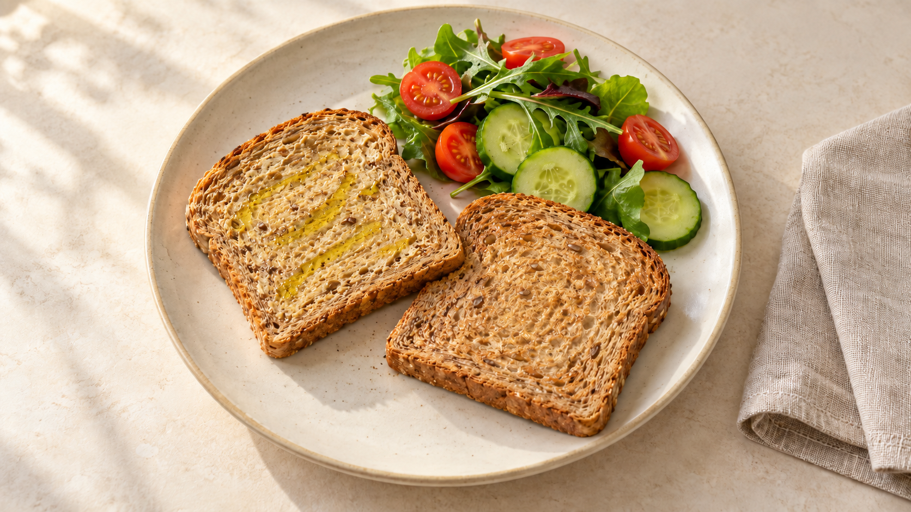
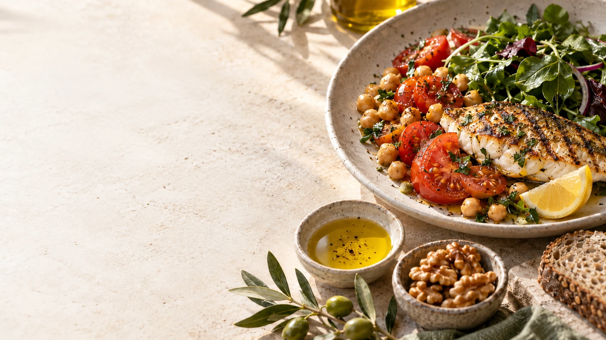

Профилактическая кардиология
Сердце
на вашей
тарелке
Питание. Холестерин.
Решения на каждый день.
по медицинской части
Просветительский материал для обсуждения. Медицинское согласование не завершено. Индивидуальную тактику определяет врач.
Фотоиллюстрации созданы с помощью ИИ. Вымышленные люди не являются пациентами или сотрудниками VERBA.

За одной цифрой
ЛПНП зависит
не только
от тарелки.
Рацион — часть общей картины.
Качество жиров и привычки
«Я питаюсь правильно. Почему ЛПНП всё равно высокий?» На липидные показатели влияют питание, наследственность, заболевания и некоторые лекарства.
Показатель в анализе не оценивает ваши старания. Причины и дальнейшие действия обсуждают с врачом.
Липидный профиль
Один бланк.
Разные смыслы.
Липопротеины переносят липиды в крови.
Холестерин в составе ЛПНП
ХС-ЛПНП и ХС-ЛПВП — концентрации холестерина, переносимого соответствующими липопротеинами. ТГ — концентрация триглицеридов, а не отдельный вид частицы-переносчика.
Обычная липидограмма не показывает число или размер частиц. Точки, размеры и траектории условны; это не изображение атомов или молекул. Целевые значения интерпретируют в контексте общего риска.

Качество жиров
Жиры разные.
Замена важна.
Заменять часть насыщенных жиров
ненасыщенными.
Важна замена части привычного источника насыщенных жиров ненасыщенными, а не просто добавление масла сверху. Количество зависит от блюда и всего рациона.
Короткая сцена масла проигрывается один раз по нажатию и останавливается. При ограничении движения остаётся статичное изображение.
Одно изменение в привычном блюде
Меняем часть.
Сохраняем
любимое.
Тот же тост. Другой источник жира.


Учебная иллюстрация принципа замены в одном блюде. Это не персональная порция и не обещание изменения анализов. Подходящие варианты зависят от всего рациона, предпочтений и медицинских ограничений.

Клетчатка
Больше растений.
В обычной еде.
Добавляйте постепенно,
с учётом переносимости.
Овощи к привычному обеду
Источники пищевых волокон — овощи, бобовые и цельные злаки. Растворимые пищевые волокна могут быть частью рациона для коррекции липидного профиля.
При заболеваниях пищеварения и других ограничениях рацион адаптируют индивидуально. Увеличивайте количество постепенно, с учётом переносимости.
Источники белка
Разнообразие
на пользу.
Рыба. Бобовые.
Подходящие нежирные источники.
Чередуйте подходящие источники белка в течение недели. Выбор учитывает предпочтения, переносимость и медицинские ограничения. Фото иллюстрирует принцип, а не персональное меню.

Устойчивые привычки
Важен
привычный рацион.
Не одна идеальная тарелка.
Привычный рацион.
Средиземноморский тип питания можно адаптировать к привычным и доступным продуктам: овощам, цельным злакам, бобовым, рыбе и источникам ненасыщенных жиров.
Важны общая структура рациона и привычки во времени. Фото не является меню курорта.
В магазине
Начните
с оборота.
Сравнивайте похожие продукты
в одинаковом количестве.
Состав и порция важнее обещаний
деньЧто внутри?
Если содержание насыщенных жиров указано, сравните его в одинаковом количестве продукта. Соль сравнивайте с солью, натрий — с натрием; используйте одинаковые единицы.
Проверьте состав на сахар и сиропы. Ориентируйтесь также на размер фактической порции. Учебная упаковка не представляет реальный товар и не содержит вымышленных пищевых значений.
Личный контекст
ЛПНП одинаковый.
Истории разные.
Общий риск не помещается
в одной цифре.
Учебное сравнение: в каждой паре меняется только один фактор, остальные условия считаем одинаковыми. Внешность не определяет риск. Повышенное давление подтверждают корректными повторными измерениями. Ранние семейные события уточняют у близких родственников; отсутствие известных событий не исключает наследственных факторов.
Курение, давление и семейная история меняют клинический контекст. Общий риск и целевое значение ХС-ЛПНП определяют по всей картине, а не только по одному показателю. Это не индивидуальный расчёт и не прогноз.
Одна цель
Питание и лечение.
Вместе.
Питание не заменяет
назначенную терапию.
Устойчивые привычки и назначенная терапия могут работать совместно. Питание и БАДы не заменяют необходимое лечение. Не отменяйте назначенную терапию самостоятельно; вопросы лечения обсуждайте с врачом.
Разговор с врачом
Три вопроса.
Ваш план.
Принесите имеющиеся анализы.
- Каков мой общий сердечно-сосудистый риск?
- Какая цель по ХС-ЛПНП подходит мне?
- Что изменить и когда оценить результат?
Дополнительные исследования и сроки повторной оценки определяют индивидуально.
Начать с выполнимого
Одна привычка.
Две недели.
Выберите свой первый шаг.
Начните с малого
Две недели — срок для практики выполнимой привычки, а не обещание изменения анализов. Сроки оценки липидного профиля определяют с врачом.
Выбор сохраняется только на время просмотра и никуда не отправляется.

Главное, что остаётся с вами
Забота о сердце
продолжается
дома.
Понятный рацион.
Решения вместе с врачом.
 Медицинский курорт
Медицинский курортПросветительский материал. Персональные решения принимают вместе с врачом.
Иллюстрации созданы с помощью ИИ; персонажи вымышлены. Медицинское согласование этой версии не завершено.